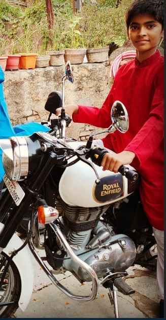

MEMORIES

LAP 02

The First Turn
Every race has a moment where everything starts feeling real. This was that turn. What began as curiosity slowly became a connection filled with small memories, late conversations, and moments that were impossible to forget. This lap was about understanding each other better. Every little detail became important, every conversation added another page to the story. The road was not always predictable, but that made the journey even more special. Like an F1 driver finding the perfect line on a difficult corner, we found our own rhythm. Lap 02 represents the moment when a simple beginning became something worth protecting.
LAP 02 / 05